calendar1
월간 달력 · 정적 1회
interfaces/layouts/BottomNav.tsx

대주제 폴더 9개 · 실제 GCS 원본 23종 · SVG 후보 115개
월간 달력 · 정적 1회
interfaces/layouts/BottomNav.tsx메모 작성 · 정적 1회
interfaces/containers/Memo.tsx

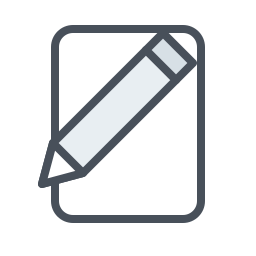
날짜 선택 달력 · 정적 4회
interfaces/containers/PickerDay.tsx

항목 추가 · 정적 1회
interfaces/containers/Count.tsx

이미지 없음 · 정적 4회
interfaces/components/Img.tsx

운동 메뉴 · 정적 2회
interfaces/layouts/BottomNav.tsx
pages/calendar/CalendarDetail.tsx

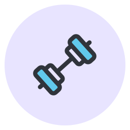
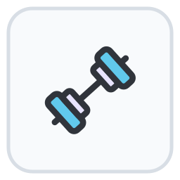
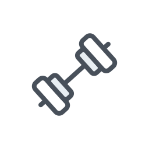
운동 계획 · 정적 3회
pages/exercise/goal/ExerciseGoalDetail.tsx
pages/exercise/goal/ExerciseGoalList.tsx

운동 중량 · 정적 8회
pages/exercise/record/ExerciseRecordList.tsx
pages/exercise/goal/ExerciseGoalDetail.tsx
pages/exercise/record/ExerciseRecordDetail.tsx
pages/exercise/goal/ExerciseGoalList.tsx
pages/calendar/CalendarDetail.tsx
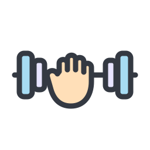

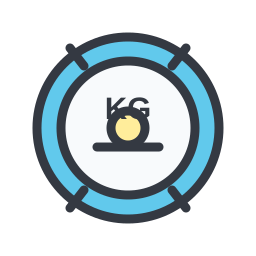
운동 세트 · 정적 2회
pages/exercise/record/ExerciseRecordDetail.tsx
pages/calendar/CalendarDetail.tsx

케틀벨 중량 · 정적 2회
pages/exercise/record/ExerciseRecordDetail.tsx
pages/calendar/CalendarDetail.tsx

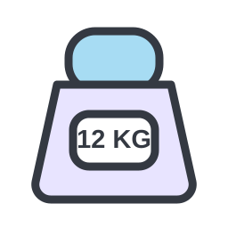
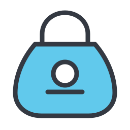
유산소 시간 · 정적 5회 · 동적 호출 포함
pages/exercise/record/ExerciseRecordList.tsx
pages/exercise/record/ExerciseRecordDetail.tsx
pages/exercise/goal/ExerciseGoalList.tsx
interfaces/containers/PickerTime.tsx (dynamic)
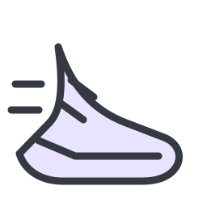

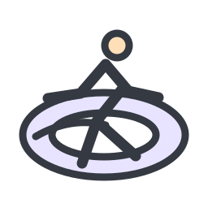
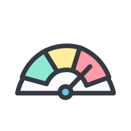
한국어 · 정적 1회
pages/user/UserAppSetting.tsx

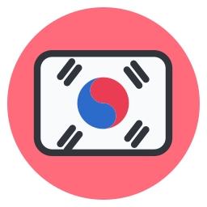
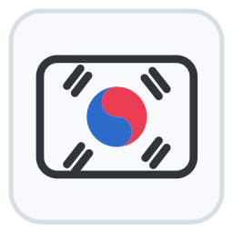
영어 · 정적 1회
pages/user/UserAppSetting.tsx

식단 메뉴 · 정적 2회
interfaces/layouts/BottomNav.tsx
pages/calendar/CalendarDetail.tsx
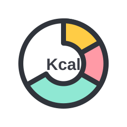
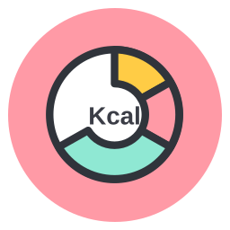
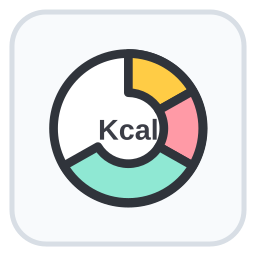
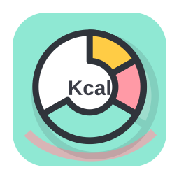
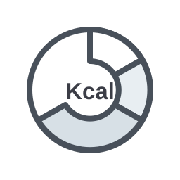
전체 브랜드 로고 · 정적 1회
pages/admin/AdminAppInfo.tsx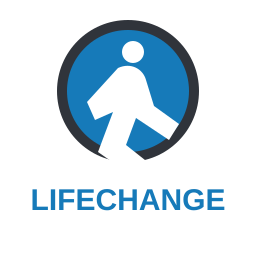
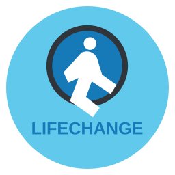
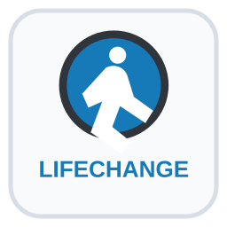
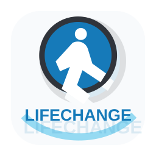
브랜드 심볼 · 정적 1회
interfaces/layouts/Header.tsx브랜드 워드마크 · 정적 1회
interfaces/layouts/Header.tsx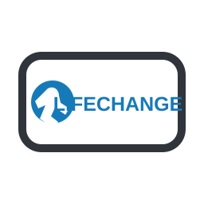
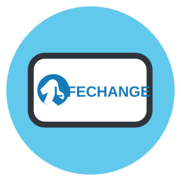
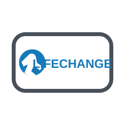
자산 메뉴 · 정적 2회
interfaces/layouts/BottomNav.tsx
pages/calendar/CalendarDetail.tsx

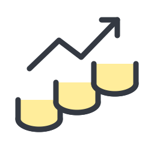
수면 메뉴 · 정적 2회
interfaces/layouts/BottomNav.tsx
pages/calendar/CalendarDetail.tsx

취침 시간 · 정적 2회 · 동적 호출 포함
pages/sleep/record/SleepRecordList.tsx
pages/sleep/goal/SleepGoalList.tsx
interfaces/containers/PickerTime.tsx (dynamic)

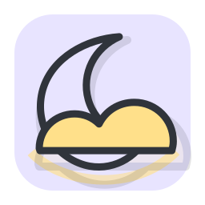
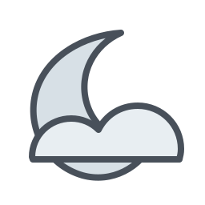
기상 시간 · 정적 2회 · 동적 호출 포함
pages/sleep/record/SleepRecordList.tsx
pages/sleep/goal/SleepGoalList.tsx
interfaces/containers/PickerTime.tsx (dynamic)

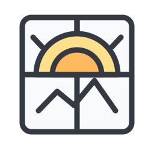
수면 시간 · 정적 2회 · 동적 호출 포함
pages/sleep/record/SleepRecordList.tsx
pages/sleep/goal/SleepGoalList.tsx
interfaces/containers/PickerTime.tsx (dynamic)

Google 계정 · 정적 3회
pages/user/UserSignup.tsx
pages/user/UserResetPw.tsx
pages/user/UserLogin.tsx